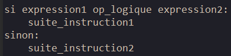
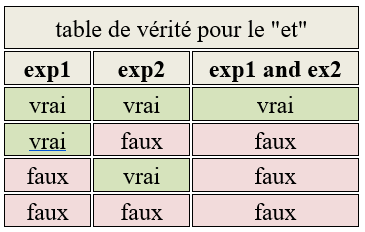
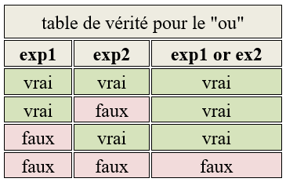
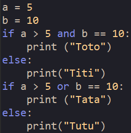
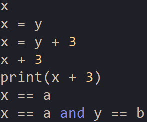
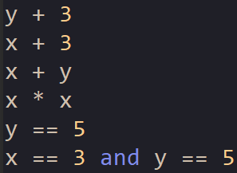

Un if peut contenir plusieurs conditions, nous aurons alors une structure de la forme :
« op_logique » étant un opérateur logique.
Nous allons étudier 2 opérateurs logiques : le "ou" (noté en Python "or") et le "et" (noté en Python "and").
Par exemple (expression1 or expression2) est vrai si expression1 est vraie et expression2 est vraie.
Autre exemple (expression1 and expression2) est faux si expression1 est vraie et expression2 est faux.
Les résultats peuvent être regroupés dans ce que l'on appelle une table de vérité :
 Soit le programme suivant :
Quel est le résultat attendu après l'exécution de ce programme ?
Vérifiez votre réponse en testant ce programme.
Les suites de symboles suivantes sont-elles des instructions ou des expressions ?
Déterminer la valeur des expressions suivantes lorsque la variable x contient 3 et y contient 5.
